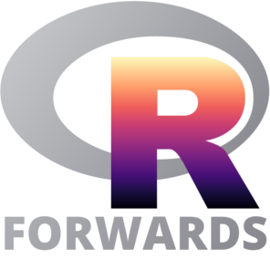

class: center, middle, inverse, title-slide # Moving Forwards: Greater Equity and Inclusion in the R Community ### <span style="font-size:40px;font-weight:600">Heather Turner</span> ### <i class="fab fa-twitter "></i> <a href="https://twitter.com/heathrturnr">@HeathrTurnr</a><br><br>.pull-left-30[.right[]].pull-right-64[.left[<br><span style="font-size:30px">Forwards taskforce</span> <i class="fab fa-twitter "></i> <a href="https://twitter.com/R_Forwards">@R_Forwards</a>]]<br><br><br><br>29 February 2020<br><span style="font-size:50px;font-weight:600"><i class="fas fa-link "></i> <a href="heatherturner.net/talks/celebration2020">heatherturner.net/talks/celebration2020</a></span> --- layout: true .footer[<i class="fas fa-link "></i> [heatherturner.net/talks/celebration2020](https://www.heatherturner.net/talks/celebration2020) <i class="fab fa-twitter "></i> [@HeathrTurnr](https://twitter.com/heathrturnr) <i class="fab fa-twitter "></i> [@R_Forwards](https://twitter.com/R_Forwards) ] --- # Current Challenges -- User Community - outreach beyond white women -- Developer community - widening participation from underrepresented groups --- class: inverse middle # User Community --- # Outreach to underrepresented groups Two principles in tension > Nothing about us without us > > — <cite>common saying esp. among disability activists</cite> <br> > The function, the very serious function of racism is distraction > > — <cite>Toni Morrison</cite> --- class: middle # Minority Ethnic/Racial Groups --- # The Importance of Community <blockquote class="twitter-tweet tw-align-center" width = "450"><p lang="en" dir="ltr">Dear Danielle,<br><br>Remember these incredibly brilliant, talented, and kind women data scientists whenever you feel like “the only one,” on a team or in a space. Thanks to <a href="https://twitter.com/hashtag/rstudioconf2020?src=hash&ref_src=twsrc%5Etfw">#rstudioconf2020</a> for bringing us together! <a href="https://twitter.com/hashtag/rladies?src=hash&ref_src=twsrc%5Etfw">#rladies</a> <a href="https://t.co/sA312EibH5">pic.twitter.com/sA312EibH5</a></p>— Danielle Smalls-Perkins (@smallperks) <a href="https://twitter.com/smallperks/status/1222380156347547649?ref_src=twsrc%5Etfw">January 29, 2020</a></blockquote> <script async src="https://platform.twitter.com/widgets.js" charset="utf-8"></script> --- # MiR Community <blockquote class="twitter-tweet tw-align-center"><p lang="en" dir="ltr">🧵! Do you identify as an underrepresented minority users of R or want to help support minority useRs? If so, MiR(My-R) is the group for you! You can sign up here: <a href="https://t.co/fR1qP6RlhF">https://t.co/fR1qP6RlhF</a>. (1/n)</p>— Dorris Scott (@Dorris_Scott) <a href="https://twitter.com/Dorris_Scott/status/1229206267169775617?ref_src=twsrc%5Etfw">February 17, 2020</a></blockquote> <script async src="https://platform.twitter.com/widgets.js" charset="utf-8"></script> --- # Ally Actions - Let people in your workplace/RUG/etc know about MiR - Join MiR if you want to particularly engage with this initiative Sign up link: [bit.ly/2unAM8b](http://www.bit.ly/2unAM8b) **NEW** Medium post: [MiR: A Community for Underrepresented Minority useRs](https://twitter.com/Dorris_Scott/status/1233475276274880518?s=20) --- class: middle # Underserved Regions --- # useR! Regional Hubs - Pilot in Munich this year - Hoping to scale up next year to include hubs in e.g. Africa, Latin America, Asia - reduce environmental cost with maximum in-person interaction - reduce financial cost - reduce travel time - potential to allow languages other than English - potential to incorporate remote participation - avoid visa issues --- # AfricaR Community ([@AfricaRUsers](https://twitter.com/AfricaRUsers)) .pull-left[ - Started in 2019 - Plans for 2020: - Write governing documents (mission statement, CoC) - Rotating curator Twitter account - Tutorials in French - Website (events calendar, blog) - Package(s) to address African needs, e.g. NLP library that supports Arabic, Swahili, etc. ] .pull-right[ .center[New leadership team]  ] ??? - have been able to develop several RUGs and had two SatRdays. - been able to really bring together R users in their respective regions, who did not know each other before - leadership has representatives from Egypt, Senegal, Ivory Coast, Nigeria, Uganda, Kenya and South Africa --- # Ally Actions - Share your contacts in underserved regions - Potential speakers/hosts for meetups, workshops - Double up already prepared talks/workshops - Reach out to local groups when travelling - Offer to present remotely --- class: middle # Disabled and Deaf useRs ??? - Some people do not identify as disabled (e.g. some Deaf, Blind, Autisitic folk etc) - Some prefer person-first, some prefer identity first --- # R for Blind Users Jonathan Godfrey has provided many resources - [Let's Use R Now (LURN)](https://r-resources.massey.ac.nz/lurn/front.html) e-book for blind users - [BlindRUG](https://www.nfbnet.org/mailman/listinfo/blindrug_nfbnet.org) mailing list - BrailleR package - text descriptions of graphics - WriteR software to produce R markdown documents - Tips for writing [accessible markdown documents](https://r-resources.massey.ac.nz/rmarkdown/) --- # Accessibility of R Conferences/Events Liz Hare has been leading the development of [best practices for events](https://github.com/forwards/event_best_practices/blob/master/DRAFTEventBestPracticesDisability.md) Informed call for proposals for useR! 2021, e.g. asking if venue had - step-free access - disabled parking close to venue - gender-neutral bathrooms - policy allowing children on premises Aim to integrate recommendations throughout organization for 2021. --- # Ally Actions - Educate yourself/others on accessibility - Expect disabled people at your events - including as speakers, chairs, committee members, etc - remove barriers to inclusion, don't wait for people to ask - Give feedback on/help develop best practices - (R-specific) advice for creating accessible/inclusive presentations - advice for social media managers ??? - chicken-and-egg problem (don't see them so don't accommodate; don't see them because their no accommodated) - planning with accessibility in mind from the start saves time and money over retrofitting. - remove barriers --- # General Ally Actions - Organizers: use best practices in your events - Noa Tamir is working on [guide for meetups](https://github.com/forwards/event_best_practices/blob/meetup-advice/meetup_best_practices.md) - Expand your network - Support the initiatives of underrepresented groups - Share opportunities - Do what you can to lessen the burden ??? sponsoring --- # R Foundation Actions? - Better information on R project webpage - Information about Forwards! - Pointers to community groups, including #rstats Twitter - Information on resources for blind R users - Adopt BlindRUG mailing list to ensure its sustainability --- class: inverse middle # Developer Community --- class: middle # Developer Meetings --- # Directions in Statistical Computing Format 2014-2019 - Both invited speakers and invited participants - Mostly R Foundation members, plus special guests - Prior to useR! -- Barriers to Inclusion - Special guests can feel out of place - Expect new contributors to come as experts already - Community members that would be interested are left out - Information is not shared ??? Explain a bit what these meetings are --- # R Implementation Optimization and Tooling Format 2016- - Open call for speakers, open to useR! participants - Parallel with useR! -- Barriers to Inclusion - Not same effort to reach out to underrepresented groups - Very little promotion to general community - Details hidden away on separate website --- # Work in Progress DSC 2020 - Speakers are invited, but anyone can attend RIOT 2019 - First time RIOT was advertised on useR! 2019 website Room for improvement - Better liaison with R Foundation Conference Committee and useR! organizers - Better promotion of events, with a focus on diversity - Alternative formats (e.g. breakout session) to enable new contributors --- class: middle # Package Development --- # Package development workshops Forwards package development [workshop materials](https://github.com/forwards/workshops/tree/master/York2020_01) - Full day and 2 hour versions - Workshop run in Auckland, Budapest, Chicago, York - Upcoming in Johannesburg, Montevideo - Working on [guide](https://forwards.github.io/workshops-guide/) for other to run workshop --- # Reluctance/Nervousness to Submit to CRAN - Bad experience on CRAN/official mailing list - Decide to not to publish/host on GitHub - Hoops to jump through - A lot of information: CRAN Repository Policy, Checklist for New Submissions - Feedback can be unpredictable and underspecified - Involved process: updating NEWS, DESCRIPTION, running checks and tests - R-package-devel provides limited support - can still be an intimidating experience - focus on specific questions --- # Basic Onboarding? - Potential for basic onboarding service for first-time (underrepresented) submitters - guidance through checklist - help with errors/issues that come up in checks/tests - help solve issues identified by CRAN - give guidance on resubmission as they "graduate" - Work with CRAN support team to keep Checklist for New Submissions up-to-date - c.f. [collaborative list of things to check](https://github.com/ThinkR-open/prepare-for-cran) --- class: middle # R Core --- # Python Core Dev: Adding Women to the Team > I want at least two female core Python Devs in the next year > > — <cite>PyCon 2015, Guido van Rossum</cite> From [Victor Stinner's PyCon 2019 talk](https://www.youtube.com/watch?v=O3UmUj9h_Eo): 2016: 0 women core devs<br> 2017: 2 women core devs<br> 2018: 4 women core devs<br> 2019: 5 women core devs ~ 30 active core devs ??? Benevolent dictator for life --- # Process of Becoming a Python Core Developer .pull-left[ Mariatta Wijaya described process in her [PyCon 2018 talk](https://www.youtube.com/watch?v=hhj7eb6TrtI) - Read the Dev Guide [devguide.python.org](https://devguide.python.org/) - Join core-mentorship and python-dev - Find issue in bugs.python.org - Propose pull request *All* these steps can be done by non-core members ] .pull-right[  @mariatta ] --- # Getting to be Invited to Be a Python Core Developer Promotion to core dev depends on trust Trust earnt by core devs getting to know people via - Pull requests (PRs) - PR review - Interacting on mailing lists, IRC, Zulip - Becoming a Developer on issue tracker (able to triage issues) --- # Mentoring Victor Stinner in his [PyCon 2019](https://www.youtube.com/watch?v=O3UmUj9h_Eo) proposes mentoring as a scalable solution to both *core dev burnout* and *lack of diversity* Recent/current work by Python Core devs ([Ref1](https://lwn.net/Articles/757715/), [Ref2](https://pythondev.readthedocs.io/community.html)) - Move to GitHub (2017) - Document promotions process (dev guide) - Mentoring guide - Contributor tutorial - Core dev office hours (public and private) - Adding enforcement procedure to code of conduct ??? typically a few emails a week, less onerous than GSoC --- # More Ideas from Other Communities Rust: [mentored projects](https://blog.rust-lang.org/2017/06/27/Increasing-Rusts-Reach.html) (diversity scholarships) - mentees invest 2-5 hours per week over 3 months - expenses paid scholarship to Rust conference following year Various: [outreachy projects](outreachy.org) for underrepresented groups - paid internship, 40 hours per week over 3 months - require mentor(s) to invest 5 hours per week ??? vs 2-3 hours for google summer of code project --- # Outreach from R Core Tomas Kalibera and Luke Tierney wrote a call for help [Reviewing Bug Reports](https://developer.r-project.org/Blog/public/2019/10/09/r-can-use-your-help-reviewing-bug-reports/index.html) (R Developer Blog, October 2019) Could do more to reach out to underrepresented groups - Core devs/bugzilla veterans could offer mentoring/tutorial - Work with Forwards, R-Ladies, etc to reach potential contributors - Blog post could become part of more comprehensive Developer Guide --- # More involvement of R Core in useR! At useR! 2020 - outreach slot adjoining keynote talk - parallel session dedicated to R Core speakers - tutorial by Tomas Kalibera on contributing to base R Consider making room for more personal interactions - conscious effort to mix at social events - opportunity for participants to book time with one/more R core person? - R core booth? Live coding lounge? AMA session? ??? 10 min talk plus 10 min Q & A --- # Input from R Community Micheal Lawrence floated idea of Requests For Proposals on perceived deficiencies in R - community teams propose solutions Possibly consider equivalent of python-ideas mailing list and Python Enhancement Proposal (PEP) process [described in the dev guide](https://devguide.python.org/langchanges/#pep-process). --- # Summary We can all support community-driven efforts for better inclusion of under-represented groups - Forwards is working well here A lot of ideas from outside and inside R community of how to get more contributors from under-represented groups - Currently don't have enough active members on Forward on-ramps team - Needs active participation of R Core and other contributors